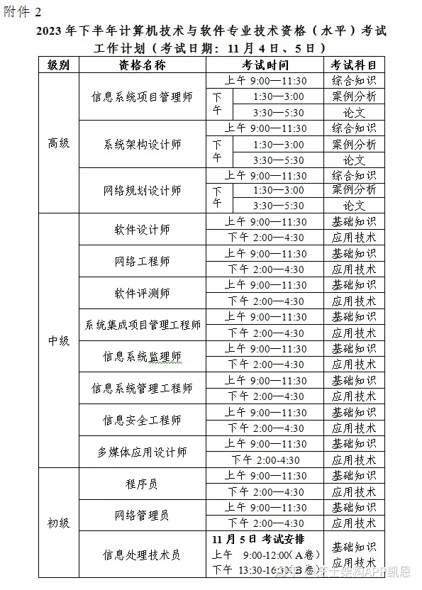

软考高级系统架构设计师笔记
#考试安排
一般是周末
上午 8:30-12:30 选择题 75 题 满分 75；
上午 8:30-12:30 案例分析(简答题) 5 题 第一题必做，后面 4 选 2 满分 75；
下午 14:30-16:30 论文题

考试形式：机考，机器上有输入法。
有草稿纸，需要自带水笔。
#数据库
E-R 图集成冲突 :
- 属性冲突: 包括属性域和属性取值的冲突。
- 命名冲突: 包括同名异义和异名同义。
- 结构冲突: 包括同一对象在不同应用中具有不同的抽象，以及同一实体在不同的局部 E-R 图中所包含的属性个数和属性排列次序不完全相同。
关系数据库操作的对象和结果是集合
三级模式
- 外模式: 视图级别，用户与数据库系统的接口，描述局部数据的逻辑结构和特征
- 模式: 表级别，描述全部数据的逻辑结构和特征
- 内模式: 文件级别，存储记录的类型、存储域的表示、存储记录的物理顺序，指引元、索引和存储路径等数据的存储组织
- 概念模式: 全体数据的逻辑结构和特征的描述，
完整性约束
- 实体完整性: 确保每个关系的主键唯一且不能为空，保证表中每条记录的唯一性。
- 参照完整性: 外键必须指向另一个表中的主键或候选键
- 用户定义完整性: 是指用户根据实际业务需求自定义的约束规则。
范式:
- 1NF: 没有重复的组+属性不可分: 只要是关系型数据库，就必须满足第一范式
- 2NF: 非主属性完全依赖于码 / 没有部分依赖例如 { A, B, C, A -> C, B -> C }, 则不属于 2NF 拆分成 { A, C, A -> C } 和 { B, C, B -> C } 即可
- 3NF: 非主属性对码没有传递依赖。例如 { A, B, C, A -> B, B -> C }, 则不属于 3NF
- BCNF(Boyce-Codd Normal Form)是对第三范式的进一步强化。
- 4NF: 关系模式中不存在多值依赖
Armstrong 公理
- 自反律: 若，则。
- 传递律: 若，，则。
- 增广律: 若，则。
- 分解规则: 若，则 和。
- 合成规则: 若 和，则。
- 合并规则: 若 和，则。
- 伪传递规则: 若 和，则。
- 拓展规则: 若，则。
- 无损分解
- 分解不会拆散函数依赖关系。判断方法: 如果 R1 R2 交集是 R1 或者 R2 的超码，则是无损分解。
数据库设计:
- 用户需求分析:
- 概念设计:
- 逻辑设计: 用某个具体的 DBMS 实现用户需要，将概念结构转换相应的数据模型，并根据用户处理要求、安全性考虑，在基本表的基础上建立必要的视图，并对数据模型进行优化。数据模型设计、E-R 图转换为关系模式、关系模式规范化、确定完整性约束、确定用户视图、反规范化设计
- 物理设计:
分布式数据库
- 全局概念模式: 描述了全部数据的特性和逻辑结构，是全局数据的逻辑视图
#嵌入式系统
- SoC
- System on Chip，即片上系统，是将整个计算机系统集成到一个芯片上，包括处理器、存储器、输入输出接口、控制器等。
- NDB
- 基于网络的数据库(Netware Database，NDB)系统是基于手机 4G/5SG 的移动通信基础之上的数据库系统，在逻辑上可以把嵌入式设备看作远程服务器的一个客户端。实际上，嵌入式网络数据库是把功能强大的远程数据库映射到本地数据库，使嵌入式设备访问远程数据库就像访问本地数据库一样方便。
- AI 芯片的关键特点
- 新型计算范式、训练和推断、大数据处理能力、数据精度、可重构能力、软件工具。
#计算机体系结构
中断分类
- 访管中断: 系统调用
- 信号中断通常是由外部设备或定时器发出的，与用户程序主动发起的系统调用无关。
- 外部中断由硬件设备(如键盘、鼠标、定时器等)触发，不涉及用户程序的特权指令。
#操作系统
死锁:
- 互斥条件
- 请求和保持条件
- 不可抢占条件
- 循环等待条件
预防死锁的方法:
- 破坏请求和保持条件
- 破坏不可抢占条件
- 破坏循环等待条件
- 最短移臂调度算法
- 移臂就是找柱面(柱面一样找扇区)，旋转则找扇区，它们均按找最近原则调度。
#计算机网络
OSI 七层模型
- 会话层没有安全服务
以太网交换机
- 初始 MAC 地址表为空
- 如果没有相应的表项，采用 ARP 洪泛操作，即广播方式进行转发
- 通过读取输入帧中的源地址添加相应的 MAC 地址表项
- MAC 地址表项是动态增长的
以太网传输使用曼彻斯特编码，没有差分信号
路由器工作在网络层，交换机工作在数据链路层。
Internet 采用分组交换方式
SDN 软件定义网络:
- 应用层。对应用户不同的业务和应用。
- 控制层。主要负责处理数据平面资源的编排，维护网络拓扑、状态信息等。
- 转发层。负责用户数据的转发。
应用层协议
- SMTP，邮件发送协议，缺省端口 25
- POP3，邮件接收协议，缺省端口 110
- IMAP，交互式邮件存取协议，缺省端口 143
#软件工程
- ISO9000
- 质量管理体系
- PMBOK
- 项目管理知识体系
CMMI 软件能力成熟度模型集成
- 五个级别: 初始级，可管理级，已定义级，稳定级，持续优化级
- 四个层次: 顶层方针、过程文件、规程文件、模板文件(Word/Excel 模版)。
软件开发模型
- 瀑布模型: 沟通/策划/建模/构建/部署
- 增量模型: 降低了实现需求变更的成本，更容易反馈，更早使用
- 原型模型
- 螺旋模型: 目标设定/风险分析/开发和有效性验证/评审
- 基于快速(原型)模型: 不能更早使用
- 敏捷模型
- 以快速(原型)模型为基础
- 构件模型
- 喷泉模型: 适合面向对象
- V 模型: 需求分析\概要设计\详细设计\编码/单元测试/集成测试/系统测试/验收测试
- W 模型: 测试与开发是同步进行的
软件生命周期模型
- 需求分析: 确定可靠性目标、分析影响因素、制定验收标准、管理框架、文档规范、初步计划和数据收集规范
- 工具: 基于自然语言或图形描述的工具和基于形式化需求定义语言的工具。
- 概要设计: 确定度量、详细验收方案、设计、计划调整、数据收集、后续阶段计划和文档编制
- 详细设计: 设计、预测、计划调整、数据收集、后续阶段计划和文档编制
- 编码阶段: 测试、排错、计划调整、数据收集、后续阶段计划和文档编制
- 测试阶段: 测试、排错、建模、评价、计划调整、数据收集、后续阶段计划和文档编制
- 实施阶段: 包括测试、排错、数据收集、模型调整、评价和文档编制
构件
- 不可再分的软件单元 / 部署、版本控制和替换的基本单位 / 一组通常需要同时部署的原子构件
- 具有唯一的标志 / 没有(外部的)可见状态，但可以利用容器管理自身对外的可见状态
- 独立而成熟的构件: 数据库管理系统和操作系统
- 有限制的构件: 基础类库
- 适应性构件: ActiveX
- 装配的构件: 软件商提供的大多数软件产品
- 可修改的构件
- 构件组装: 定制、集成和扩展
COP 面向构件的编程
- 多态性、模块封装性、后期的绑定和装载、安全性
CORBA 构件模型
- 伺服对象 Servant
- 对象适配器 POA
- 对象请求代理
中间件
- 操作系统之上，管理计算资源和网络通信，实现应用之间的互操作
- 连接和通信，屏蔽硬件、操作系统、网络和数据库的差异。
- 负载均衡和高可用性、安全机制与管理功能，以及交易管理机制，保证交易的一致性。
- 一组通用的服务去执行不同的功能，避免重复的工作和使应用之间可以协作。
- 产品配置
- 指一个产品在其生命周期各个阶段所产生的各种形式(机器可读或人工可读)和各种版本的文档、计算机程序、部件及数据的集合。
软件过程/软件活动
- 制作软件产品的一组活动以及结果
- 活动包括: 软件描述、软件开发、软件有效性验证、软件进/演化 (没有分析、没有测试)
软件工具
- 软件开发工具: 需求分析工具、设计工具、编码与排错工具
- 软件维护工具: 版本控制工具、文档分析工具、开发信息库工具、逆向工程工具、再工程工具
- 软件管理和支持工具: 项目管理工具、配置管理工具、软件评价工具
逆向工程: 重构, 设计恢复, 再工程
逆向工程 4 个抽象层次: 实现级、结构级(相互依赖关系)、功能级(功能及程序段之间关系)和领域级(程序分量与概念之间关系)
- 需求管理
- 包括变更控制、版本控制、需求跟踪。不包括需求获取的部分
- 需求抽取
- 迭代过程 1. 需求发现 2.需求分类和组织 3.需求优先级划分和协商 4. 需求规格说明
- 需求跟踪
- 编制每个需求与系统元素之间的联系文档，这些元素包括其它需求、体系结构、设计部件、源代码模块、测试、帮助文件和文档等。
- 需求变更
- 问题分析和变更描述、变更分析和成本计算、变更实现
软件需求开发的最终文档经过评审批准后，则定义了开发工作的需求基线(baseline)。这个基线在客户和开发者之间构筑了计划产品功能需求和非功能需求的一个约定(agreement)。需求约定是需求开发和需求管理之间的桥梁。
结构化分析
- 功能建模: DFD 数据流图
- 描述数据的流向和处理
- 行为建模: 状态转换图
- 数据建模: ER 图
软件设计
- 数据设计: 改善程序结构和模块划分，降低过程复杂性
- 结构设计: 主要部件之间的关系
- 人机界面设计
- 过程设计: 系统结构部件转换成软件的过程描述
结构化设计
- 四个任务: 体系结构设计、接口设计、数据设计和过程设计
- 结构化设计工具
- 需求分析: 数据流图
- 概要设计: 模块结构图、层次图和 HIPO 图，软件需求转化为数据结构和系统结构
- 详细设计: 程序流程图、伪代码和盒图，细化得出软件的详细数据结构和算法
敏捷开发
- 以人为核心、迭代、循序渐进的开发方法。
- 主打适应型，而非可预测型
- 对比: 结构化开发方法是面向过程的。
- 以原型开发思想为基础
用户界面不应该经常修改
RUP 统一软件开发过程
- 用例驱动、以体系结构为中心、迭代式开发
- 迭代式开发
- 初始阶段
- 细化阶段
- 构建阶段
- 交付阶段: 测试、发布
- 9 个核心工作流: 业务建模、需求、分析与设计、实现、测试、部署、配置与变更管理、项目管理、环境 (软件开发时不考虑成本)
- 4+1 视图模型:
- 核心: 场景
- 逻辑/实现视图: 最终用户功能特性
- 进程/过程视图: 设计的并发和同步特证，集成人员
- 开发视图: 在开发环境中软件的静态组织结构，开发人员
- 物理视图: 系统工程师
UML 模型
- 用例图、类图、时序/顺序图、部署图、组件图、构件图
- 对象图: 对象和关系
- 活动图: 控制流和数据流
- 状态图: 接口、类、协作行为
- SysML
- 多了一个需求图
- 耦合
- 内容耦合 > … > 数据耦合
- 内聚
- 功能内聚 > …
用例图
- 用例
- 扩展关系(Extend)
- 包含关系(Include): A 包含 B 行为
- 泛化关系(Generalization): 一般和特殊，“会员注册”和“电话注册”、“邮件注册”
- 参与者
- 继承关系
软件复杂度
- 代码行方法
- Helstead 方法
- McCabe 方法: 环形复杂度 = 闭环个数 + 1
软件构件:
- 独立部署单元，不可拆分
- 作为第三方的组装单元
- 没有（外部的）可见状态，但可以利用容器管理自身对外的可见状态
- 构件可以在适当的环境中被复合使用，因此构件需要提供清楚的接口规范，可以与环境交互。
- 在任何环境中，最多仅有特定构件的一份副本。
- 可部署: 二进制形式，无需编译，可配置
构件分类: 关键字分类法、刻面分类法和超文本组织方法
构件组装: 基于功能的、基于数据的和面向对象的
- 业务流分析
- 通过对系统进行长期监听，利用统计分析方法对诸如通信频度、通信的信息流向、通信总量的变化等参数进行研究，从而发现有价值的信息和规律。
ABSDM 基于架构的软件设计模型
- 过程: 需求、设计、文档化、复审、实现、演化
- 由商业、质量和功能需求的组合驱动
- 采用视角与视图的概念描述软件架构
- 自顶向下，递归细化: 自顶向下更快得到系统演示原型
- 直到能产生软件构件和类
- 基础: 功能分解、选择架构风格、软件模版的使用
- 体系结构需求来自: 系统的质量目标、系统的商业目标，系统开发人员的商业目标
- 文档化: 从使用者角度，体系结构说明+质量说明书
- 架构演化 6 个步骤: 需求变化归类；制订体系结构演化计划；构件变动；更新构件的相互作用；构件组装与测试；技术评审；演化后的体系结构。
体系结构视角 perspective
- 静态视角: 判断质量特性
- 动态视角: 判断系统行为特性
- 逻辑视图: 设计元素的功能和概念接口
- 进程视图
- 实现视图
- 配置视图
架构风格: 包含定义、词汇表和约束
- 软件系统的结构、行为和属性的高级抽象
- 批处理架构: 强调顺序执行
- 管道-过滤器架构: 过滤器之间可以并行处理数据
- 仓库架构: 中央数据结构 + 独立构件
- 黑板架构: 一种利用模块化和分散式框架解决问题的方法，每个专家贡献一部分解决方案。属于数据共享型架构风格。
- 进程通信架构: 通过消息传递进行通信，具体的实现方式可以包括消息队列、管道、共享内存等。
- 事件驱动/隐式调用架构: 系统的组件通过事件进行交互，独立性，非耦合性，例如推荐系统
- 分层/层次型架构: 物联网，嵌入式；问题: 级联修改、性能、层层依赖
- 递归架构: 嵌入式
- 主程序/子过程架构
- 面向对象架构
- 虚拟机架构: 自定义流程
- 基于规则的架构: 规则集、规则解释器、规则/数据选择器和工作内存
- 解释器架构: 更加灵活
- C2架构: 构件和连接件，底部连接到另一个的顶部
DSSA 特定领域软件架构:
- 四种角色: 领域专家、领域分析师、领域设计人员和领域实现人员
- 基本活动: 领域分析、领域设计和领域实现
- 分析阶段: 分析特定应用领域，获取领域模型，从而为后续的设计和实现提供基础
- 设计阶段: 获得DSSA 特定领域软件架构
- 实现阶段: 开发和组织可重用信息，并对基础软件架构进行实现
- 建立过程: 强调并发、递归和反复迭代
- 定义领域特定元素阶段: 重点是确定领域的通用功能和特定需求，而不是直接定义用户需求
- 定义领域模型和体系结构阶段: 目标是抽象出领域内通用的模型和体系结构
- 领域开发环境(领域架构师)、领域特定应用开发环境(应用工程师)和应用执行环境(操作员)
- 垂直域: 定义了一个特定的系统族，包含整个系统族内的多个系统，结果是在该领域中可作为系统的可行解决方案的一个通用软件体系结构。
- 水平域: 定义了在多个系统和多个系统族中功能区城的共有部分。在子系统级上涵盖多个系统族的特定部分功能。
ATAM 架构权衡分析方法
- 过程: 场景和需求收集、架构视图和场景实现、属性模型构造和分析、架构决策与折中
- 场景是从风险承担者的角度对与系统的交互的简短描述
- 头脑风暴的三种场景: 用例场景、增长场景、探索性场景
- 质量属性: 可用性、易用性、性能、可修改性、可测试性、安全性、可靠性、可维护性
- 刻画手段: 刺激源、刺激、环境、制品、响应、响应度量
- 一般采用刺激、环境和响应三方面来对场景进行描述
- 开发之前先进行评价和折中
- 核心概念: 属性
- 关注点: 需求说明
- 效用树: 树根 – 质量属性 – 属性分类 – 质量属性场景(叶子节点)
- 敏感点: 一个或多个构件(和／或构件之间的关系)的特性
- 权衡点: 影响多个质量属性的特性，是多个质量属性的敏感点
- 改变加密级别的设计决策属于权衡点
- 风险点: 泛指可能引起风险的因素
SAAM 基于场景的架构分析方法
- 过程: 场景开发、架构描述、单场景评估、场景交互评估和总体评估。
- 针对最终架构进行评估
- 主要输入: 问题描述、需求声明和体系结构描述
SAEM 从外部和内部质量属性两个角度进行评估，创建了一个基础框架，用于规约建模、创建度量准则和评估质量属性。
SAABNet 贝叶斯信念网络
SACMM 软件架构修改度量方法
SASAM 软件架构静态分析方法
ALRRA 软件架构可靠性风险评估方法
AHP 层次分析法
ADL
软件维护
- 排错性维护、适应性维护、**完善性维护(新功能)**和预防性维护
N 版本设计
- 相异成分规范评审
- 相异性确认
- 背对背测试
软件重用
- 需求分析文档、设计过程、设计文档、程序代码、测试用例和领域知识等
- 横向重用: 不同应用领域中的软件元素，例如数据结构、分类算法和人机界面等
- 纵向重用: 在相同或相似的应用领域中对特定功能或模块的重用
- COM 对象重用: 包含(Contain)和聚集(Cluster)
EJB、COM+ 较为适用于应用服务器。
WSDL
- 服务做什么 What
- 如何使用/访问服务 How
- 服务位于何处 Where
SOA 面向服务系统
- UDDI: Web 服务注册和查找的标准
- WSDL: Web 服务描述语言
- SOAP: 基于 XML, 信封和 XML 编码定义在相同命名空间
- BPEL: Web 服务定义和执行业务流程的语言, 用来将分散的、功能单一的 Web 服务组织成一个复杂的有机应用。
- 服务注册表模式
- 企业服务总线 ESB 模式
- UDDI
- 描述、发现和集成Web 服务
六种业务流程建模方法
- 流程图、角色活动图和角色交互图、IDEF0 和 IDEF3、Petri-Net(从流程的角度出发)、UML 活动图和 BPMN
- 软件工程过程
- PDCA, 计划 执行 检查 处理
DO-178: 目标、过程、数据
专家系统的学习机制主要依赖其核心组成部分: 知识库和推理机。
企业集成
- 应用集成: 高层
- 服务集成: 中
- 会聚集成: 中层
- 数据集成: 底层
软件复用
- 主要阶段: 分析，构造/获取，管理，使用
- 机会复用: 开发过程中，只要发现有可复用的资产，就对其进行复用
- 系统复用: 开发之前，就要进行规划，以决定哪些需要复用。
构件组装的常见方式: 层次、叠加和顺序等
构件管理: 构件描述，构件分类，构件库组织，人员及权限管理，用户意见反馈等
操作不完备: 一个构件的提供接口是另一个构件请求接口的一个子集
面向对象设计
- 实体类
- 控制类: 控制
- 边界类: 界面，接口，隔离
- 分析模型: 顶层架构图、用例与用例图、领域概念模型
- 设计模型: 包图(描述架构)、交互图、类图、状态图、活动图
面向对象设计原则
- 单一职责原则、开放-封闭原则、李氏替换原则、依赖倒置原则、接口隔离原则和组合重用原则
- 李氏替换原则: 子类可以替换父类
- 依赖倒置原则: 细节依赖于抽象，抽象不依赖于细节
面向对象设计模式
- 创建型: 单例模式、工厂方法模式、抽象工厂模式、建造者模式、原型模式
- 抽象工厂模式: 为创建一系列相关或相互依赖的对象提供了一个接口
- 建造者模式: 将一个复杂对象的构建与它的表示分离，使得同样的构建过程可以创建不同的表示
- 原型模式: 不了解要创建对象的确切类以及如何创建等细节的情况下创建自定义对象
- 结构型: 适配器模式、桥接模式、组合模式、装饰模式、外观模式、享元模式、代理模式
- 桥接模式: 将抽象部分与它的实现部分分离，使它们可以独立地变化；画图软件: 图形=抽象部分，画图方法=实现部分
- 装饰模式: 比直接继承更加灵活
- 行为型: 责任链模式、命令模式、解释器模式、迭代器模式、中介者模式、备忘录模式、观察者模式、状态模式、策略模式、模板方法模式、访问者模式、备忘录模式(Memento)
- 另一种划分方法: 类设计模式 vs 对象设计模式
- DCMM 数据管理能力成熟度评估模型
- 数据战略、数据治理、数据架构、数据应用、数据安全、数据质量、数据标准和数据生存周期 (没有数据维护)
失配问题
- 构件失配
- 连接子失配
遗留系统的演化策略
- 技术含量较高、业务价值较高 -> 改造
- 技术含量较高、业务价值较低 -> 集成，利于后续维护
- 技术含量较低、业务价值较高 -> 继承，保留
- 技术含量较低、业务价值较低 -> 淘汰
信息隐蔽: 提高可修改性、可测试性和可移植性
三层 C/S 架构
- 表示层: GUI
- 功能层: 应用本体，业务逻辑
- 增加了一个应用服务器
- 数据层: 数据库管理系统
MVC 模式
EAI 企业应用集成:
- 服务层次低到高: 通讯服务、信息传递与转化服务、应用连接服务和流程控制服务
- 原则: 应用程序独立性、面向商业流程、独立于技术和平台无关
- 数据复制，基于接口的数据集成，数据联邦
#推荐系统
基于内容的推荐系统:
- 能推荐新的或不流行的项目
- 能为具有特殊兴趣的用户进行推荐(个性化)
- 不需要其他用户的数据
- 无法解决冷启动问题
协同过滤
- 需要其他用户的数据
#法律
- 信息化需求
- 包含三个层次，即战略需求、运作需求和技术需求。
- 战略需求。组织信息化的目标是提升组织的竞争能力，为组织的可持续发展提供一个支持环境。
- 运作需求。组织信息化的运作需求是组织信息化需求非常重要且关键的一环，它包含三方面的内容: 一是实现信息化战略目标的需要；二是运作策略的需要，三是人才培养的需要。
- 技术需求。由于系统开发时间过长等问题在信息技术层面上对系统的完善、升级、集成和整合提出了需求。
- 《软件产品管理办法》
- 任何单位和个人不得开发、生产、销售、进出口含有以下内容的软件产品:
- 侵犯他人知识产权的；
- 含有计算机病毒的；
- 可能危害计算机系统安全的；
- 含有国家规定禁止传播的内容的；
- 不符合我国软件标准规范的。
外观设计专利的相似外观设计不得超过 10 项。
著作权:
- 一般作者: 具有永久署名、修改、保护完整 / 50 年内的发表、使用、报酬权利。
- 软件作者: 具有永久署名、修改 / 50 年内的发表、复制、发行…权利。
- 商标: 自注册过的, 10 年, 冲突: 1 先来后到 2 先使用 3 协商或抽签
- 发明专利: 20 年, 实施许可: 独占、排他实施、普通
- 实用新型专利: 10 年
- 艺术作品: 著作权属于作者, 所有权和展览权属于拥有者
- 软件著作权: 产生自软件开发完成之日起, 在公司完成属于公司, 开发软件所用的思想、处理过程、操作方法或者数学概念不受保护, 不知情情况下使用者不构成侵权, 提供者承担责任
- 法律、法规等不适用于著作权法保护
- 改编、翻译、注释、整理已有作品而产生的作品，其著作权由改编、翻译、注释、整理人享有，但行使著作权时不得侵犯原作品的著作权。
- 受委托创作的作品，著作权的归属由委托人和受托人通过合同约定。合同未作明确约定或者没有订立合同的，著作权属于受托人(即实际开发的人)。
职务发明创造: 离职后1 年内完成的，与其在原单位的工作或任务相关的发明创造。
作者的署名权、修改权、保护作品完整权的保护期不受限制
#信息安全
- 数字证书
- 用户登录过程中可通过验证CA 发出的签名确认该数字证书的有效性
- 安全审计四要素
- 控制目标、安全漏洞、控制措施和控制测试
数据分级分类
- 基础安全层: 数据分级分类、数据备份、数据加密等基本安全措施
- 权限控制层: 负责数据的访问权限管理
- 战略安全层应用接口层: 高层安全策略或接口相关管理
《计算机信息系统安全保护等级划分准则》:
- 第 1 级: 用户自主保护级
- 第 2 级: 系统审计保护级
- 第 3 级: 安全标记保护级
- 第 4 级: 结构化保护级
- 第 5 级: 访问验证保护级
TBAC 基于任务的访问控制
- 组成要素包括工作流、授权结构体、受托人集和许可集
数据资产的特性: 可控制，可量化，可变现，虚拟性、共享性、时效性、安全性、交换性和规模性
信息安全系统的措施: 技术方面的安全措施、管理方面的安全措施、政策法律方面的安全措施
#项目管理
- 三点估算法
- 期望时间 = (最短时间 + 4 * 最可能时间 + 最长时间) / 6
盈亏平衡点
- 可变成本: 需要换算成单位产品的成本
- 税率: 单位产品的税率
#软件测试
静态测试: 通过对软件的需求规格说明书、设计说明书以及源程序做结构分析和流程图分析，从而找出错误。
灰盒测试: 除了重视输出相对于输入的正确性，也看重其内部的程序逻辑。
系统测试:
- 依据需求规格说明书进行测试
- 为了发现需求分析环节的错误
软件备份
- 静态备份
- 动态备份
可靠性: 是指产品在规定的条件下和规定的时间内完成规定功能的能力。
MTBF、MTTD、MTTR、MTBR
- MTBF(Mean Time Between Failures): 平均故障间隔时间，是系统在两个故障之间的平均正常运行时间。
- MTTF(Mean Time To Failure): 平均故障时间，是系统正常运行到发生故障的平均时间。
- MTTD(Mean Time To Detect): 平均故障检测时间，是检测到故障所需的平均时间。
- MTTR(Mean Time To Repair): 平均修复时间，是修复故障所需的平均时间。
- MTBR(Mean Time Between Repairs): 平均修复间隔时间，是修复后到再次发生故障的平均时间。
脚本结构
- 线性脚本: 线性脚本是录制手工测试的测试用例时得到的脚本，这些脚本是未做修改的。
- 结构化脚本: 结构化脚本具有各种逻辑结构，包括选择型结构、分支结构、循环迭代结构，而且具有函数调用功能。结构化脚本具有很好的可用性和灵活性，易于维护。
- 共享脚本: 共享脚本是指一个脚本可以被多个测试用例使用，即脚本语言允许一个脚本调用另一个脚本。
- 数据驱动脚本: 数据驱动脚本是指将测试输入存储在独立的数据文件中，而不是脚本中。这样，脚本可以针对不同的数据输入实现多个测试用例。
- 关键字驱动脚本: 关键字驱动脚本是数据驱动脚本的逻辑扩展，它用测试文件描述测试用例，它说明测试用例做什么，而不是如何做。关键字驱动脚本允许使用描述性的方法，只需要提供测试用例的描述，即可生成测试用例。
#案例分析
第一题必做，后面 4 选 2
#题型
选词填空型、简答填空型、概念对比型、概念简述型、解决方案简述型
DFD 数据流图
- 父图 ( 上层数据流图 ) 与 子图 ( 下层数据流图 ) 平衡（也叫作分层细化过程平衡）。个数一致：两层数据流图中的数据流个数一致。方向一致：两层数据流图中的数据流方向一致。
- 黑洞 加工只有输入没有输出（只进不出）
- 奇迹 加工只有输出没有输入（只出不进）
- 灰洞 加工不出输出流
- 数据存储 一般来说这个点可以不提。正常情况下必须既有读的数据流，又有写的数据流；在某张子图中，可能只有读没有写，或者只有写没有读。
STD 状态(转换)图
- （1）状态、初态、终态。
- （2）事件、转移、动作。
- （3）并发状态机。状态机图的推荐使用场合：包括类设计场合
用例图
- 用例之间的关系: 包含、扩展和泛化
类图
- 类之间的关系: 关联–、依赖-|+>、泛化-|>、聚合-<>、组合-<+>和实现-.-|>
- 关联–: 一般的关联关系
- 聚合-<>和组合-<+>的区别: 组合关系的部分不能脱离整体而存在，聚合关系没有生命周期约束
- 依赖-|+>，泛化-|>，实现-.-|>的区别: 依赖关系是 A 依赖 B，泛化关系是 A 是 B 的子类，实现关系是 A 实现 B 的接口
顺序图/时序图
- 对象 生命线
- 交互片段
- 执行发生
- 同步、异步、返回消息
通信图/协作图
- 对象 生命线
- 连接
- 同步、异步、返回消息
时序图 vs 通信图: 顺序图以时间轴为主线，通过垂直生命线和消息箭头清晰展示消息传递的时序关系，适合体现复杂的操作流程、并发或者异步操作；而通信图则以对象间的结构关系为中心，通过节点和链接呈现交互路径，强调对象协作的拓扑结构，适合分析静态关系紧密、消息路径简单的场景。两者语义等价，可以相互转换。实际应用中需要根据具体需求和复杂度选择合适的图示方式，关注时序细节用顺序图，强调结构关系用通信图，也可以结合使用以全面描述交互逻辑。
活动图
- 活动 对象 分区
- 起点 终点 决策点 分叉/合并
- 控制流 对象流
类识别
- 实体类 边界类 控制类
面向对象设计原则
- SOLID
- S: 单一职责原则
- O: 开放-封闭原则
- L: 里氏替换原则
- I: 接口隔离原则
- D: 依赖倒置原则
开闭原则: 面向对象设计的开闭原则（Open Closed Principle, OCP）指的是一个软件实体（类、模块、函数等）应该对扩展开放，对修改关闭。也就是说，在设计一个模块时，应该允许在不修改原有代码的情况下，通过增加新代码来扩展其功能或者行为。
单一职责原则: 单一职责原则（Single Responsibility Principle, SRP）是指一个类应该只有一个设计原因，即一个类应该只有一个职责。
里氏替换原则: 里氏替换原则（Liskov Substitution Principle, LSP）是指子类对象应该能够替换父类对象，并且程序的行为不会发生变化。
表现层层次结构
- MVC 模式
- 视图 -> 控制器 -> 模型 -> 视图更新
- MVP 模式
- 视图 <-> 呈现器 <-> 模型
- MVVC 模式
- 视图 <-> 视图模型 <-> 模型
中间层架构
数据层架构
- 在线访问模式: 应用程序直接操作数据库
- DAO: 通过接口封装数据库操作
- DTO: 用于跨进程/跨网络传输数据的对象
- ORM: 对象关系映射
数据库程序采用在线访问方式的优点包括性能较高、能够处理复杂查询；缺点是要求开发人员具备 SQL 编程能力，且代码修改维护相对困难。 ORM 的优点是简化了数据库操作，降低了学习和开发成本，无需编写 SQL 语句，减少代码量，降低 SQL 质量带来的影响；缺点是性能不如在线访问方式，且处理复杂查询困难。选择 ORM 的主要考虑因素是团队的技术水平和项目的复杂性。
增加数据访问层的原因是为了实现数据和业务逻辑的分离，提高系统的可维护性和可扩展性。数据访问层的主要功能是提供对数据源的访问和操作，封装数据访问的细节，使得业务逻辑层不需要关心数据存储的具体实现。简化开发流程，方便后续的维护和扩展，提升系统的可重用性和可测试性。
物联网
- 感知层 网络层 应用层
云原生架构原则
- 弹性原则 系统自动伸缩，适配业务需求
- 韧性原则 抵御软硬件异常，保障系统稳定
云原生架构模式
- 服务化架构模式: 以应用模块划分软件，通过接口契约、标准协议定义业务关系，结合 DDD、TDD、容器化部署提升代码质量与迭代速度，典型模式为微服务、小服务
- Mesh 化架构模式: 将中间件框架（RPC、缓存等）从业务进程分离，业务进程仅保留薄 Client，中间件逻辑由 Mesh 进程完成
- Serverless 模式: 开发者无需关心应用运行环境，云自动处理应用启动、调度、关闭，业务流量/ 事件触发处理
- 存储计算分离模式: 分布式环境中，将暂态数据、持久数据采用云服务保存，有状态场景通过时间日志 + 快照恢复服务
- 分布式事务模式: 针对多数据源场景，提供多种事务模式：XA 模式（强一致，性能差）；基于消息最终一致性（高性能，通用性有限）；TCC 模式（应用层控制，侵入性强）；SAGA 模式（补偿事务，开发维护成本高）；SEATA AT 模式（高性能、无代码工作量，有场景限制）
- 可观测架构: 通过 Logging（多级别日志）、Tracing（请求链路跟踪）、Metrics（系统量化度量）实现可观测性，定义组件 SLO（并发度、耗时等）
- 事件驱动架构: 基于事件集成应用 / 组件，事件含 schema 可校验，具备 QoS 保障与失败响应机制，用于服务解耦、数据变化通知、事件流处理等
云原生架构反模式
- 庞大的单体应用
- 单体应用“硬拆”为微服务
- 缺乏自动化能力的微服务
容器技术
容器技术是一种轻量级的隔离技术，允许多个应用在同一操作系统内核上运行，每个容器运行一个或者一组应用，具有独立的文件系统、运行环境等，实现应用的快速部署和隔离。虚拟机技术通过虚拟化技术在物理服务器上模拟出多个独立的虚拟计算机，每个虚拟机有自己的硬件资源、操作系统和应用程序，实现完全的隔离和资源分配。容器技术相较于虚拟机技术更加轻量级，资源占用更少，启动速度更快，能更加高效地利用硬件资源，满足系统升级中对于资源利用优化的需求。且在当前技术发展下，安全问题可通过安全策略、容器隔离等方式进行防护，在满足业务需求的同时，能以更低的成本和更高的效率实现资源的利用。契合企业系统升级的初衷。
容器编排技术
- SOA 面向服务架构
- 面向服务架构（SOA）是一种软件架构风格，强调将应用程序的不同功能单元划分为松耦合的服务，并将这些服务通过标准化的接口和契约联系起来。接口是采用中立的方式进行定义的，而且独立于实现服务的硬件平台、操作系统和编程语言。者使得构建和集成复杂的分布式系统变得更加灵活和高效。
服务注册模式
- 服务提供者 服务注册中心 服务请求者
- UDDI 注册中心
- WSDL 服务定义语言
- SOAP 简单对象访问协议 基于 XML 用于通信
REST 风格
- 资源 URI
- 统一资源接口
- 资源表述
- 资源链接
- 状态转移
- ESB 企业服务总线
- 企业服务总线（ESB）提供位置透明的消息路由和寻址服务、服务注册和命名管理功能，支持多种消息传递模式（点对点、发布/订阅等），多种传输协议，多种消息格式，提供服务编排和转换功能，支持事务处理和安全性等。
微服务
- 解耦复杂应用、独立部署、技术选型灵活、容错性好、易扩展。
- 聚合器微服务
- 代理微服务
- 链式微服务
- 分支微服务
- 数据共享微服务
- 异步消息微服务
软件架构风格
- 数据流架构
- 批处理
- 管道-过滤器
- 调用/返回架构
- 主程序/子程序
- 面向对象
- 客户端/服务器
- 以数据为中心的架构
- 仓库
- 黑板
- 虚拟机
- 解释器
- 独立构件
- 事件驱动
- 特殊
- C2
- 过程控制
面向对象和解释器风格的对比分析: 应该选择解释器风格。折扣规则的变化频繁，且变化的规则数量较多，使用面向对象风格会导致类的数量过多，增加了系统的复杂性和维护成本。而解释器风格则可以通过动态加载和解析规则来实现灵活的规则处理，适应性更强，且可以更好地支持规则的变化和扩展。个性化折扣定义灵活性方面，解析器风格可以通过定义规则的语法和语义来实现个性化折扣的定义，做到千人千面。系统性能方面，面向对象风格可能略优于解释器风格，但在实际应用中，解释器风格的性能也可以通过优化解析器和规则引擎来提升。综合考虑，解释器风格更适合该系统的需求。
- 面向架构评估的质量属性
- 易理解性、可扩展性、可重用性、可测试性、可维护性、可移植性、性能、安全性
质量属性场景描述
- 刺激源 刺激 环境 制品 响应 响应度量
系统架构评估方法
- 基于调查问卷或调查表
- 基于场景的评估 包括 SAAM ATAM
- 基于度量的评估
SAAM
- 输入: 问题描述、需求声明、架构描述
- 过程: 场景开发、架构描述、单场景评估、场景交互评估、总体评估
ATAM 基于 SAAM
- 演示、调查和分析、测试、报告
- 调查和分析: 场景和需求收集、架构视图和场景实现、属性模型构造和分析、权衡
- 效用树: 树根-质量属性-属性分类-质量属性场景（叶子节点）
- 主要关注的质量属性: 性能、安全性、可修改性、可用性
安全架构
- 可用性、完整性、机密性
数据加密技术
- 对称加密
- 非对称加密
- 数字签名
- 数字证书
基于口令的简单认证机制 vs 基于公钥体系的机制: （1）基于口令的认证方式实现简单，但由于口令复杂度及管理方面的原因，易受到认证攻击；而在基于公钥体系的认证机制中，由于使用了公钥和私钥的非对称加密技术，在认证过程中，私钥仅存储在用户本地，不在网络中传输，因此可以有效地防止认证攻击，与基于口令的认证方式相比，安全性更高。（2）按照需求描述，系统在完成用户身份鉴别后，需根据用户的身份信息进行权限控制。在基于口令的认证机制中，用户口令为用户和认证服务器共享，没有用户独有的直接秘密信息。而在基于公钥体系的认证机制中，可基于用户私钥对私有数据进行加密，只有用户本人才能解密，实现更加简便。（3）基于公钥体系的认证机制的协议和计算相对复杂，因此在性能上会略逊于基于口令的认证机制。但由于企业业务环境的总用户在 100 人以内，规模不大，运行环境又为局域网环境，因此基于公钥体系的认证机制可以满足平台效率要求。
系统架构原则
批处理和流处理
Lambda 架构
- 批处理层 Hive Spark MapReduce
- 速度处理层 Storm Spark Streaming Flink
- 服务层 Kylin Presto Impala Druid
- 以批处理层和加速层结果数据为基础，对外提供低延时数据查询和即席查询服务
Kappa 架构
- 只保留流处理层，批处理层被流处理层替代
对比
IOTA 架构
数据库系统
索引
数据分片
数据分区
数据库高可用模式
- 读写分离
- 主从复制
- 一致性问题
数据库选型
分布式系统
- CAP 理论: 数据一致性、可用性和分区容错性
- BASE 理论: 基本可用、软状态和最终一致性
分布式事务
- 2PC 两阶段提交协议
- TCC 柔性事务
- 柔性事务本地消息表
Redis
MongoDB
- 分片集群
- 主从副本
ElasticSearch
- 全文搜索
- 倒排索引